RPL04 Convolución y correlación de señales en tiempo continuo.
Caudillo Barbosa Eric.
Olea García Bryan.
Robles Martínez Darío Antonio.
Contents
INTRODUCCIÓN
Metodos numericos
1.-Integración: La integral definida de una función continua f : [a, b] C R 7-> R en el intervalo [a, b],es el área de la región del plano delimitada por la gráfica de la función, el eje de abscisas y las rectas verticales x = a y x = b
Ejemplo: f(x)=e^-x^2
syms x;
f=exp((-x)^2);
a=-1;
b=1;
F=int(f,x,a,b);
2.-Newton-Cotes
Son los tipos de integración numérica más comunes. Se basan en la estrategia de reemplazar una función complicada o datos tabulados por un polinomio de aproximación que es fácil de integrar ,donde fn(x) es un polinomio de la forma
- fn(x)=a0+a1*x+a2*x^2+...+an-1*x^n-1+an*x^n
donde n es el grado del polinomio
2.1.-Regla del trapecio
La regla del trapecio es la primera de las fórmulas cerradas de Newton - Cotes. Corresponde al caso donde el polinomio de aproximación es de primer grado .Geométricamente, la regla del trapecio consiste en aproximar el área debajo de la curva definida por f(x), por el área bajo la recta que une los puntos (a, f(a)) y (b, f(b)).
- int(f,x,a,b)=(h/2)[f(x0)f(x)]-(h^3/12)f''(E) x0<E<x1
Ejemplo
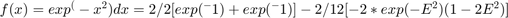
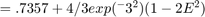
2.2.- Regla de simpson
En lugar de utilizar trapecios a partir de dos puntos mejoró la aproximación utilizando parábolas que pasen por tres puntos por los cuales pasa la función. Elegimos 3 puntos: A(x_1, f(x_1)), B(x_2, f(x_2)) y C(x_3, f(x_3)). Con estos tres puntos vamos a calcular la parábola que pasa por ahí. Es decir, tenemos que determinar los parámetros a,b,c tales que y = ax^2 + b\,x + c pasa por los puntos A,B,C.
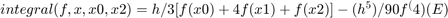
Ejemplo
$f(x)=exp^(-x^2)dx=1/3[exp(-1)+4exp(0)+exp(-1)]-1/90[-4exp(-E^2)(-4E^4+12E^2-3)] $
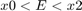
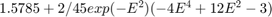
2.3.- Regla de 3/8 de Simpson
La regla de integración de Simpson 3/8 para la “integración cerrada” es decir, para cuando los valores de la función en los extremos de los límites de integración son conocidos.
Además de aplicar la regla trapezoidal con segmentación mas fina, otra forma de obtener una estimación mas exacta de una integral es con el uso de polinomios de orden superior para conectar los puntos (en lugar de utilizar líneas para conectarlos).
El método de Integración Simpson 3/8 consiste en tomar el área bajo una ecuación cúbica que conecta cuatro puntos
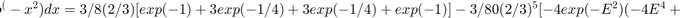
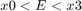
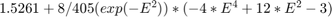
2.4.- Regla del trapecio compueta
- Forma de aproximar una integral definida utilizando n trapecios.En la formulación de este metodo se supone que f es continua y positiva en el intervalo [a,b] en n subintervalos ,cada uno de ancho x=(b-a)/n.
2.5.-Regla de Simpson compuesta
- El intervalo de integración [a,b] se divide en un número par,n,de subintervalos.Tenemos entonces:
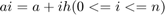
donde 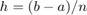
2.6.-Cuadratura Gaussiana
El objetivo de la cuadratura de Gauss - Legendre es determinar las abscisas x1 y x2 y dos coeficientes w1 y w2 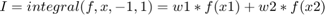
sea exacta para polinomios cúbicos de la forma f(x) = a3x3 + a2x2 + a1x +a0. Como hay que determinar cuatro números w1, w2, x1 y x2 en la expresión anterior, se deben seleccionar cuatro condiciones que deben cumplirse. Usando el hecho de que la integración es aditiva, será suficiente con exigir que la integral anterior sea exacta para las cuatro funciones f(x) = 1, x, x2, x3
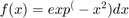
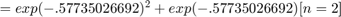
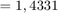 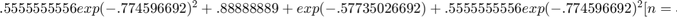
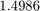
Resolución del PR04.
A continuación se analiza el problema 1. del PR04. Se realiza la convolución de la señal:
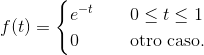
con la señal:
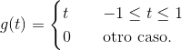
Se muestra la gráfica de la convolución numérica con la función "convconm", se modificó con el fin de poder modificar los límites, los intervalos de integración y agregar una función para el resultado analítico.
El resultado numérico se muestra con un color negro y el resultado analítico se muestra de un color rojo.
clear all; close all; clc; f = @(t) exp(-t).*(t>=0 & t<=1); g = @(t) t.*(t>=-1 & t<=1); dtau = 5e-3; tau = -2:dtau:5; tvec = -1.5:.1:2.5; lims = [-1.5 1.5;-1 1]; res04 = @(t) 0.*(t<-1 & t>2) + (2*exp(-t-1) + t -1).*(t>=-1 & t<0) + ... ((2-t)*exp(-1) + t -1).*(t>=0 & t<1) + ((2-t)*exp(-1)).*(t>=1 & t<=2); convconm(g,f,res04,tau,dtau,tvec,lims);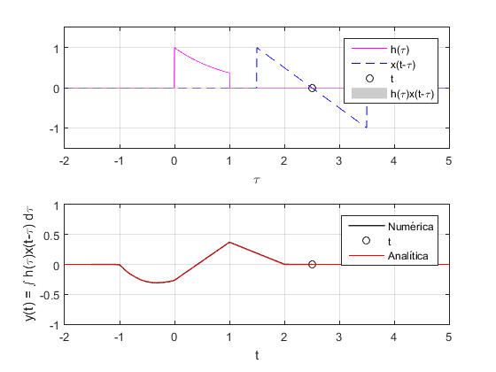
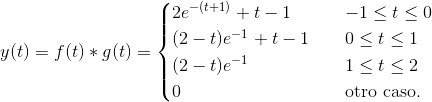
Para poder notar las diferencias entre el resultado numérico y analítico, se realiza un aumento en la sección marcada.
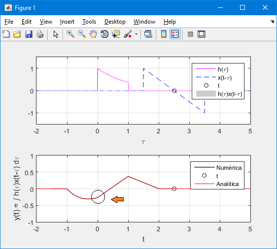
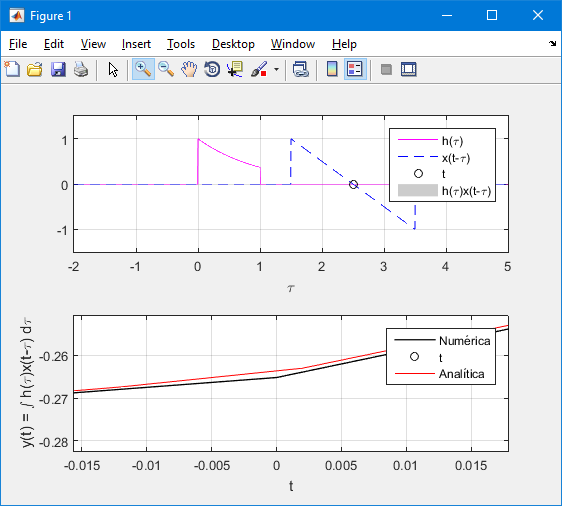
Resolución del PR05.
A continuación se analiza el problema e) del PR05. Se realiza la autocorrelación de la señal:
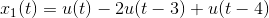
Conocemos la propiedad de la convolución para resolver correlaciones, y tenemos una función que nos ayuda a resolver convoluciones, así que podemos resolver el problema por la siguente ecuación:
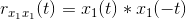
El resultado numérico se muestra con un color negro y el resultado analítico se muestra de un color rojo.
x1 = @(t) 0.*(t<0) + 1.*(t>=0) - 2.*(t>=3) + 1.*(t>=4); x11 = @(t) 0.*(t<0) - 1.*(t>=0) + 2.*(t>=-3) - 1.*(t>=-4); dtau = 1e-2; tau = -6:dtau:8; tvec = -5:.1:5; lims = [-1.5 1.5;-1.5 4.5]; res05 = @(t) 0.*(t<-4 & t>4) + (-t-4).*(t>=-4 & t<=-3) + (t+2).*(t>-3 & t<=-1)... + (3*t + 4).*(t>-1 & t<=0) + (-3*t + 4).*(t>0 & t<=1) + (-t + 2).*(t>1 & t<=3)... + (t-4).*(t>3 & t<=4); f2 = figure; convconm(x11,x1,res05,tau,dtau,tvec,lims);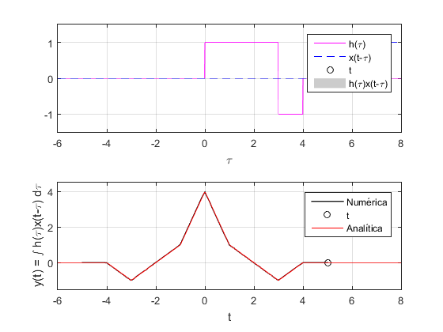
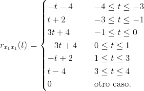
Para poder notar las diferencias entre el resultado numérico y analítico, se realiza un aumento en la sección marcada.
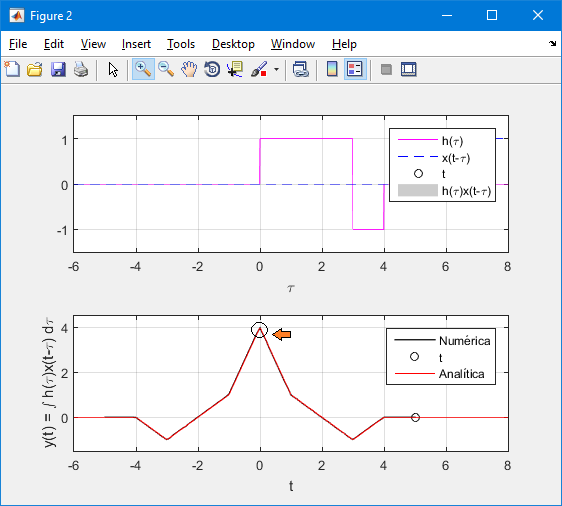
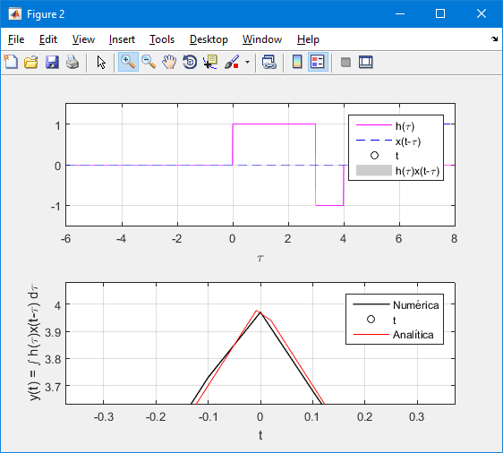
Convolución discreta Lathi 3.1.1
A continuación se analiza el problema 3.1.1 Se realiza la convolución de dos señales discretas.
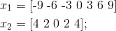
%f3 = figure;
n1 = -3:3;
x1 = [-9 -6 -3 0 3 6 9];
n2 = -2:2;
x2 = [4 2 0 2 4];
convdisc([n1;x1],[n2;x2]);
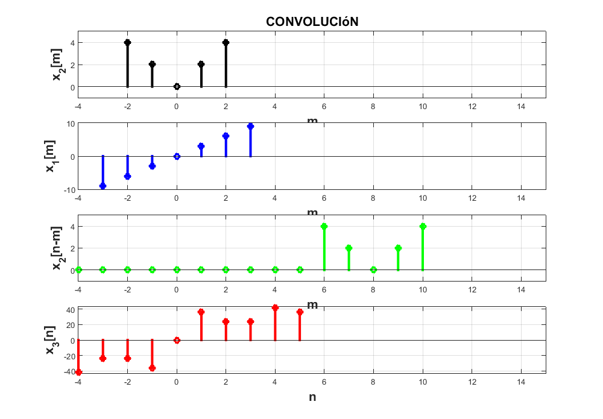 Correlación discreta Lathi 3.1.1
A continuación se analiza el problema 3.1.1 Se realiza la correlación de dos señales discretas.
Conocemos la propiedad de la convolución discreta para resolver correlaciones, y tenemos una función que nos ayuda a resolver convoluciones discretas, así que podemos resolver el problema por la siguente ecuación:
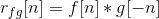
%f4 = figure;
n1 = -3:3;
x1 = [-9 -6 -3 0 3 6 9];
n2 = -2:2;
x2 = [4 2 0 2 4];
convdisc([n1;x1],[n2;x2]);
Como podemos observar, la inversión de la señal x2[n] es la misma señal x2[n],por lo que, en este caso, el resultado es igual a la convolución.
Convolución con CONV de Matlab.
A continuación se analiza el problema 3.1.1 Se realiza la convolución de dos señales discretas con la función "conv(f,g)".
La función conv comienza a realizar la convolución de la señales tomando como su inicio un n=0, por lo que para compensar este cambio, hay que retrasar o adelantar el resultado utilizando la propiedad:
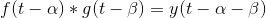
En este caso, x1 se atrasa 3 unidades y x2 2 unidades, por lo que el retraso total en la convolución sería de 5 unidades.
El retraso total se aplica en el vector n que dará sentido a la gráfica.
f5 = figure; x1 = [-9 -6 -3 0 3 6 9]; x2 = [4 2 0 2 4]; n = -5:5; y = conv(x1,x2); stem(n,y,'LineWidth',2,'Color',[0.87058824300766 0.490196079015732 0]); grid on; xlabel('n','FontWeight','bold','FontSize',14); ylabel('y[n]','FontWeight','bold','FontSize',14);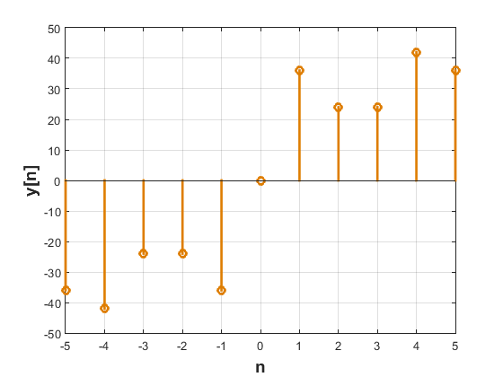